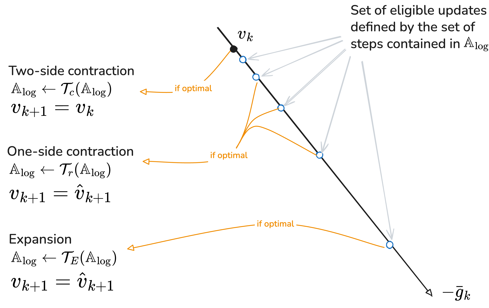
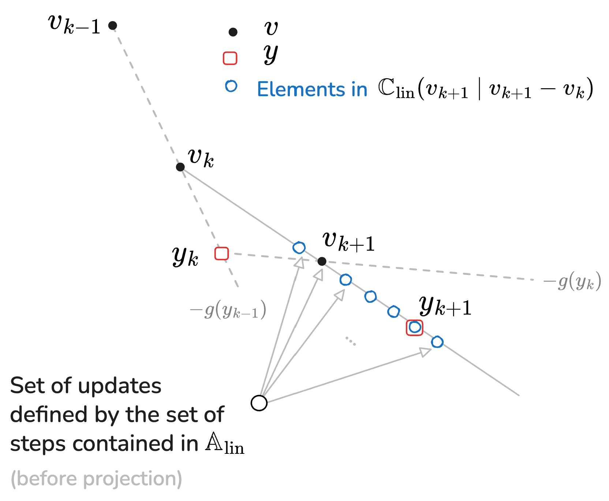

mizoGrad
A module for extremely fast gradient-based optimization.
Optimization, First order methods, Gradient-based, Box Constraints, Machine Learning, Python
Problem Statement
mizoGrad is a python module that implements Gradient-Based solution to the following box-constrained optimization problems:
\[ \min_{x\in [\underline x, \bar x]}f(x, {\scriptsize \texttt{**kwargs}}) \tag{1}\]
where \(f\) is a differentiable map, \(x\) is the decision variable while \(\texttt{**kwargs}\) is a list of keywords arguments that is necessary to define the cost function.
Algorithm features
The Gradient-based algorithm used in the mizoGrad module is fully described in the paper. This section just highlights some main features that distinguishes it from existing alternatives.
The algorithm uses three main mechanisms that makes it outstanding, namely:
- The use of line search along the gradient line which is defined through a specific adaptable grid.
- The adaptation of the grid is based on a trust region mechanism
- Unlike the standard implementation of the Nesterov acceleration step,
mizoGraduses another line search along the acceleration path. Moreover, this line search allow for negative steps.
This is schematically shown in the following Figures:
The gradient step

The acceleration step

Despite the use of both line search on the gradient direction and acceleration step, the algorithm is proved to asymptotically converges to a point that meets the KKT optimality condition (see the proof in the reference paper).
Syntax of use
In order to use the module, the user need to provide three **mandatory arguments*, namely:
- The python function for the cost function
- The python function for its gradient
- The number of decision variables.
All the other parameters corresponds to some default values. In particular, if non xmin and xmax arguments are provided, the problem is considered to be unconstrained.
The following section provides the full list of input arguments
Input arguments
The following list of arguments are used in the instantiation of GradOptimizer class. An instance of this class possesses a solve method that enables to solve the above mentioned problem Equation 1.
Please notice that it is mandatory that decision variable appears as the first argument in the formal definition of the cost function.
| Parameter | Description | Default |
|---|---|---|
f |
The python function that provides the cost function. This function might need the value of some dictionary of parameters so that the generic call is f(x, **kwargs) where kwargs is a dictionary (see the example below) |
– |
g |
The python function that provides the gradient of the function. Similarly to the cost function This function might need the value of some dictionary of parameters so that the generic call is f(x, **kwargs) where kwargs is a dictionary (see the example below) |
– |
nx |
The number of decision variable (dimension of x) |
– |
xmin |
The lower bound on the vector of decition variable | [-inf] * nx |
xmax |
The upper bound on the vector of decition variable | [+inf] * nx |
ng |
The integer representing the number of adaptive grid for the line searched. As a matter of fact, the line search along the gradient line involves ng+2 grid-points while the line search on the acceleration path uses ng+1. (See the reference for more details and this is so) |
5 |
alpha_min |
The initial value of the exponent of the smallest step on the gradient search, the default value means that the initial adaptable smallest step is \(10^{-8}\). Notice that this is the smallest adaptable step size but not necessarily the smallest candidate step. This is because the eta<1/(2L) value (see below) is always there without change. |
-8 |
alpha_max |
The initial value of the exponent of the largest step on the gradient search, the default value means that the initial adaptable largest step is \(1\). The values of the last two arguments are updated according to trust region-like mechanism | 0 |
fast_min |
The smallest step along the acceleration line (no adaptation) | -0.2 |
fast_max |
The largest step along the acceleration line (no adaptation) | 1.0 |
rho_adapt |
The adaptation ratio for the trust region mechanism | 0.05 |
eta |
The constant extremely small step size along the gradient. This value is not updated and is supposed (for the proof of convergence) to be lower than \(1/(2L)\) where \(L\) is the Lypschiz constant of the cost function. | 1e-16 |
Calling the solve method
The solve method is called on an instance of the GradOptimizer class with the following arguments
x0: The initial guesskwargs: The dictionary needed for the cost function and the gradientmaxIter: The maximum number of allowed iterations (Default:100)epsG: The early stopping threshold on the norm of the gradient (Default: \(10^{-8}\))display: Boolean for the display or not of intermediate results
Returned dictionary
The solver returns a dictionary with the following fields:
| Parameter | Description | |
|---|---|---|
xopt |
The optimal solution found \(\in \mathbb R^{n_x}\) | |
fopt |
The corresponding optimal value of the cost function | |
normG |
The norm of the gradient at the solution | |
lesalpha_min |
The history of the smallest exponents during the iterations | |
lesalpha_max |
The history of the largest exponents during the iterations | |
traj |
The history of the cost function values during the iteration | |
traj_c |
The history of the acceleration step size during the iterations |
Example of use
This script gives a complete example of use of the mizoGrad module
import numpy as np
from mizoGrad import GradOptimizer
from time import time
#from SaA import GradOptimizer
np.set_printoptions(formatter={'float': lambda x: "{0:0.4f}".format(x)})
# Define the cost function and the gradient
def cost(x, a=10, b=2, m=1):
f = np.power((x[0]-a)*x[1] + b * x[2] ** 3, 2*m)
return f
def cost_gradient(x, a=10, b=2, m=1):
term = 4 * np.power((x[0]-a)*x[1] + b * x[2] ** 3, 2*m-1)
g = np.array([
term * x[1],
term * (x[0]-a),
term * (3 * b * x[2] ** 2)
])
return g
x0 = 2*np.array([1,1,1])
xmin = np.array([-5] * len(x0))
xmax = np.array([+5] * len(x0))
s2a = GradOptimizer(
f=cost,
g=cost_gradient,
nx = 3,
xmin=xmin,
xmax=xmax,
ng=5,
alpha_min=-8,
alpha_max=0,
fast_min=-0.2,
fast_max=1.0,
rho_adapt=0.05,
eta=1e-16,
)
# set the dictionary argument used the cost function and gradient
kwargs = dict(
a=3,
b=1,
m=1,
)
# solve the problem
t1 = time()
R = s2a.solve(x0=x0,
kwargs=kwargs,
maxIter=20,
epsG=1e-8,
display=True)
cpu = time()-t1
print('solution: ', np.array(R['xopt'], dtype=float))
print('best cost : ', cost(s2a.y, **kwargs))
print('cpu = ', cpu)which leads to the followning results:
value 9.374756801 normg=292.957 | alpha_min=-8.0 | alpha_max=-0.4
value 3.931283917 normg=31.930 | alpha_min=-8.0 | alpha_max=-0.78
value 1.109572100 normg=17.759 | alpha_min=-7.962 | alpha_max=-0.419
value 0.000013588 normg=6.499 | alpha_min=-7.922 | alpha_max=-0.04185
value 0.000000666 normg=0.066 | alpha_min=-7.922 | alpha_max=-0.4359
value 0.000000029 normg=0.015 | alpha_min=-7.922 | alpha_max=-0.8102
value 0.000000000 normg=0.003 | alpha_min=-7.922 | alpha_max=-1.166
value 0.000000000 normg=0.000 | alpha_min=-7.922 | alpha_max=-1.504
value 0.000000000 normg=0.000 | alpha_min=-7.922 | alpha_max=-1.825
value 0.000000000 normg=0.000 | alpha_min=-7.89 | alpha_max=-1.52
value 0.000000000 normg=0.000 | alpha_min=-7.89 | alpha_max=-1.838
value 0.000000000 normg=0.000 | alpha_min=-7.859 | alpha_max=-1.536
value 0.000000000 normg=0.000 | alpha_min=-7.859 | alpha_max=-1.852
solution: [1.7020 -1.2326 -1.1696]
best cost : 8.860672896017431e-21
cpu = 0.0008881092071533203Acceleration
Notice that any acceleration in the computation process of the cost function and the gradient is naturally inherited by the algorithm. Consequently, for demanding optimization-based applications (Nonlinear Model Predictive Control / Moving-Horizon Estimation), you might want to accelerate the evaluation of these function through compiled version of CasaDi or PyTorch.
Citing mizoGrad
@misc{alamir2026nonlinearmodelpredictivecontrol,
title={A Nonlinear Model Predictive Control Perspective on Gradient-Based Optimization: A New Efficient, Parameter-Free and Provably Stable Algorithm},
author={Mazen Alamir},
year={2026},
eprint={2607.14600},
archivePrefix={arXiv},
primaryClass={cs.CE},
url={https://arxiv.org/abs/2607.14600},
}
}The above reference contains a detailed description of the algorithm together with an extensive comparison with the best available alternatives. It also shows an example of application for very fast NMPC feedback implementation.